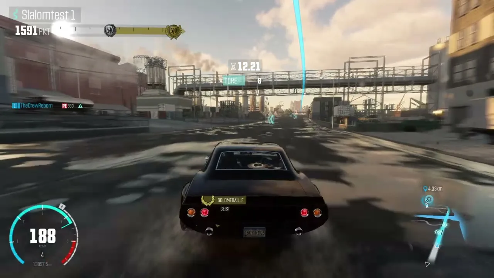
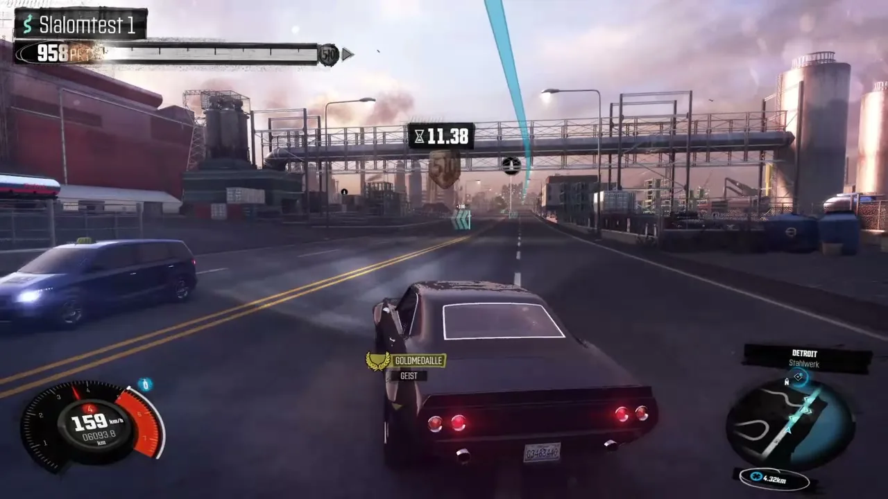
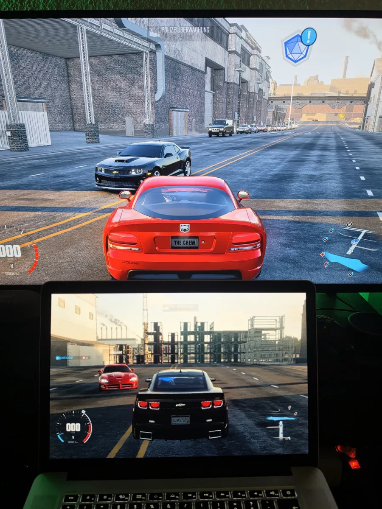

- Your own serverThe game talks to a server you run, not to the official one. No PS Plus, no account with anyone.
- A computer or a phoneWindows, macOS and Linux, or an Android phone in your Wi-Fi. The server takes a few megabytes.
- PS4, PS5 and PC togetherConsole and PC players meet in the same world and drive in one crew.
- One save everywhereYour progress lives on your server: start on the console, carry on at the PC.
Download
Server
Everyone needs it. It runs while you play, on a computer or an Android phone in your network.
For your systemDownloadAll systems:
How to set it up
Server on a computer
- Unpack the zip on a computer in your home network or on a server on the internet.
- Start TheCrewReborn-Server (on Windows: TheCrewReborn-Server.exe).
- Allow it on the first start. Windows: confirm SmartScreen and the firewall prompt. macOS: allow the unsigned program once in the system settings.
- Keep it running while you play.
Server on an Android phone
- Open the APK on the phone and allow installing apps from this source.
- Start the app. It runs the server in the background and shows its admin page.
- Keep the phone in the same Wi-Fi as your console or PC.
On PS4 or PS5
- Copy CUSA00161.xml to /data/GoldHEN/patches/xml/ on the console.
- Switch on "Offline server redirect" in GoldHEN's patch menu.
- Start the server first, then the game.
On PC
- Copy dinput8.dll and reborn.ini into the game folder, next to TheCrew.exe.
- Start the server first, then the game.
- To continue your PS4 progress, set Name in reborn.ini to your PS4 user name.
Playing on a server outside your home? The game finds a server in your home network by itself. For any other server, ask its owner for the address and enter it exactly as given: on the PS4 in the file /data/TheCrew/server.txt (copy it to the console over FTP), on the PC after Host= in reborn.ini. The README in the server download explains every step.
What's new in 0.2.0
- The server runs on Android phones: an app with the admin page built in.
- Admin page: a player view with cars, missions, skills and medals; the page fits a phone.
- A skill medal gives a performance part for your car, shown on the result screen.
- Logins survive a server restart, and the game may start before the server.
- PC: crew invites to PS4 players work again, also with a VPN on the PC.
- Players stay visible to each other after a server restart.
- Optional text chat on PC, off by default.
- Leaderboards keep every player's best score.
- Skill ghosts and the PC game's settings are kept on the server.
- Optional bonus cars and items from the account reward packs.
- The guide names the Windows firewall rule a PC needs to host a crew session.
Supported versionsRelease notes and all filesReport a bugFree of charge. The server is open source (GPL 3).
The server in your pocket
Put the server on an Android phone and leave it in your Wi-Fi: the app keeps it running in the background. The same admin page opens on a computer in the browser. It shows who is online, every player's progress and all settings.
On the phone
On the computer
- See which games are connected and who is playing
- Look into every save: cars, missions, skills with medals
- Change settings; they are saved into config.ini
- Read the log, restart or stop the server
See it running
Recorded in November 2026. The story on a PS4 from a new save, up to the first tuned car, a crew with a PS4 and a PC player, a night run from Detroit to St. Louis, the whole prologue in the base game 1.00 and a police chase with a crate.
Two games in one: 1.00 and 1.21
The server plays both PS4 versions. Drive the base game as it shipped in December 2014, or with update 1.21 and Wild Run, the way most players know it from 2015 on. The same spot in the same mission, two looks: drag the slider.


1.00 · 2014 1.21 · Wild RunStills from the project's own PS4 recordings, at the same spot in the same mission. The time of day and the weather can differ between two runs; the HUD, the lighting and the road surface show the version.
- Base game 1.00 (December 2014)
- The original look: the launch lighting and colours, before the graphics overhaul
- The launch handling, before the rework of steering, grip and counter-steering
- No rain, no thunderstorms: the dynamic weather came with the update
- The story, skills, factions and the cars of the base game, without add-ons
- Experimental on the Reborn server: tested from the start of the story to the first tuning shop
- Update 1.21 with Wild Run (2015 to 2016)
- New physically based rendering with reworked lighting, new car shaders and far less pop-in
- Reworked handling: aerodynamics, steering, counter-steering and grip
- Dynamic weather: rain, wet roads and thunderstorms
- Wild Run and Calling All Units: motorbikes, drift, drag and monster truck specs, The Summit, police missions; the paid add-ons only if you own them
- Tested on the Reborn server, on PS4 and PC
Which one looks better is a matter of taste. The 2015 press praised the new rendering, and some players miss the warmer colours of the launch. Now you drive both and decide for yourself.
Sources for the changes: Ubisoft · VideoGamer · GamingBolt · PCGamesN
Where the trip stands
The game boots on PS4 and PC, the world loads, progress is saved, and players on both platforms drive together in one crew. The pre-release is out; what is built but untested gets tested one by one. Below: what works, what waits for its test, what is being built and what comes later.
Back on the road
The game starts and connects to the Reborn server instead of the shut-down official one.
Into the world
Login, free roam across the map, progress saved after every event.
Missions and rewards
Every mission type pays XP and bucks, calculated with the game's own formula. You level up and unlock perks.
Cars and tuning
Dealers, tuner specs and the garage work, and every car loads again after a restart.
PC version
The PC game runs on the same server as the PS4: a small file in the game folder points it there. Login, the prologue and the open world work.
Online multiplayer and crossplay
PS4 and PC players meet on your own server, see each other and drive together. Since 5 November crews work across platforms too: a PS4 player invites a PC player, the invite goes through and the crew lead changes hands.

First crossplay test: the PS4 (top) and the PC (bottom) see each other. Watch the crossplay crew video Watch the first clip on YouTubePS4 base game 1.00
The game without any update runs on the same server, on its own port and with its own saves. Tested from the start of the story to the first tuning shop; experimental.
Protected player names
Every PS4 and every PC creates its own key, and a player name belongs only to its player's devices. Nobody from outside the home network can take over someone else's name or save, so the server can run on the internet too. At home your PS4 and PC still join your name by themselves.
Server on an Android phone
Since 0.2.0 the server also runs as an app on an Android phone, with the admin page built in. A PS4 logged in to a server on a phone, also after a game restart with the phone's screen off.
Pre-release: download and try it
The server is open source and runs on Windows, macOS, Linux and Android; the console patch and the PC file come with it. Every activity and the whole story are built, but not all of it is tested yet. Expect bugs, and please report them.
Every activity, tested
Summit events, police chases, factions and the parts shops calculate like the original server. Each one gets tested on PS4 and PC.
Release 1.0
The whole story played from start to finish, every activity tested, and a step-by-step guide.
Working today
- Starts without the official servers
- Story missions and free roam
- Missions, rewards, level-ups and perks
- Buying cars at the dealer
- A garage that keeps your cars
- Street spec upgrades at the tuner
- Progress saved on the server, one save per PS4 profile
- Settings saved on the console, per profile
- Console and PC find the server on your network by themselves
- Fake online drivers on or off, your choice
- The summit calendar shows the summit of the week
- DLC cars, if you own the DLC
- Your PS4 profile picture in the game, fresh at every start
- Tuned cars load again after a restart
- On PC: login, the prologue and the open world, on the same server as the PS4
- Multiplayer: PS4 and PC players meet on one server and see each other
- Crews across PS4 and PC: invite a player from the other platform
- Cross-save: one save on PS4 and PC under the same player name
- Protected player names: nobody from outside your home network can take over your name or save
- At home, PS4 and PC join one player name by themselves
- Performance parts in the garage: owned parts load and can be fitted
- The PC game on Windows 11 for ARM, too
- The Steam version of the PC game, just like the Ubisoft Connect version
- Paint and body parts at the tuner, paid with bucks or crew credits, and fitted
- Rewards for practice runs and skills, calculated as in the game
- No more kick for standing still
- Police chases: rewards for escaping, fines for getting caught
- The server on an Android phone
- Logins survive a server restart, and the game may start before the server
- Reward parts from skill medals, shown on the result screen
- Text chat on PC, as a setting
Built, waiting for its first test
- Several consoles on one home server
- Summit events, entry and rewards
- Factions, the daily bonus and a faction war that keeps running around the clock
- Buying cars at every dealer on the map
- Buying perk points
- Collectibles kept, complete sets unlock parts, a car for every region's landmarks
- A server on the internet: on a Linux server or at home with port forwarding
- Reward parts: a medal in a mission gives a performance part for the car you drove
- Rewards for every mission type, calculated with the game's own formula: story, faction, summit, practice runs, Wild Run, police missions and instant challenges
- Perks and summit boosts that raise mission rewards
- Faction reputation, rank, daily salary and the monthly result
- Police missions: crates, fragments and the cars they unlock
- The summit prize wheel: boosts, crew credits, the summit car, parts and tokens
- Leaderboards with every player's best score on your server
- Bonus cars and items from the account reward packs
- PC game settings kept on the server
In the garage
- Reward parts from activities other than skills
- Rivals on the leaderboards, with times no better than the medals allow
- Crews: joining again after a lost connection
Further down the road
- More game regionsThe US and Asian releases of the PS4 game, next to the European version.
- Single-player cheatsUnlimited money, every car and every part unlocked, for when you just want to cruise. Single player only; in multiplayer everyone plays fair.
- Up to 4K on PS4 Pro and PS5A patch raises the render resolution. Same world, a much sharper picture.
- PvP racesRaces against other players on your server, with lobbies and matchmaking.
- Multiplayer over the internetThe server already runs on the internet with protected names. Next, players from different networks will see each other and drive together.
- Friends and chatA friends list and the in-game chat, on your own server.
- Community challenges and newsWeekly challenges for everyone on the server, and news in the game's menu.
- Server on the consoleLater: everything runs on the PS4 itself, no second device needed.
- Own error messages on PCClear messages that name the server and this site, like on the PS4.
From the road
Scenes recorded on a PS4 playing on the Reborn server.
What you'll need
- Your own copy of The Crew for PS4 or PCPS4: disc or download, the European version, with update 1.21 or as the base game 1.00. PC: the Ubisoft Connect or the Steam version. The exact versions are listed below.
- On console: a PS4 or PS5 that runs homebrew game patchesThe patch points the game at your server. On PC a small file in the game folder does the same.
- A computer or an Android phone on the same networkWindows, macOS, Linux or Android. It runs the server while you play.
Supported versions
- PS4
- The Crew, European version CUSA00161, with update 1.21 installed (the game info shows 01.21), or the base game without any update (01.00, experimental). Tested on a PS4 with firmware 11.50 and GoldHEN.
- PC
- Ubisoft Connect or Steam version: TheCrew.exe 1.2.0.0, build 502193, the last update. Tested on Windows 11, also Windows 11 on ARM (in a virtual machine).
- Server
- Windows (x64 and ARM64), macOS (Apple and Intel), Linux (x64 and ARM64) and Android 9 or later as an app. One program, nothing else to install.
Might work, not tested yet: the PS5 through backwards compatibility. Not yet: other PS4 regions and game versions, because the patch fits only CUSA00161 1.00 and 1.21.
No game files are provided. You need your own copy; the project contains only original code. The DLC is off on the server: switch it on in its config.ini only if you own it. The README in the download explains the setup.
Questions
Do I need PS Plus?
No. The game talks to your own server only.
Where do I get the game?
You need your own copy of The Crew. On PS4 the disc is still easy to find second-hand; install it with update 1.21, or play the base game 1.00 without it. On PC you need the Ubisoft Connect or the Steam version that you own and have installed. This project provides no game files, no download links and no help with copies you don't own.
What about the DLC?
The DLC is off: Wild Run's motorbikes and specs, Calling All Units and the car packs stay locked. Like the game itself, you may only use the DLC if you own it. If you do, set dlc = on in the server's config.ini; the PS4 and the PC take the setting from the server. The server cannot check what you bought, because the official servers are gone, so the responsibility is yours. The README explains the step.
Does it run on PS5?
Yes. The PS5 plays the PS4 version through backwards compatibility, with the same patch and the same server.
Where is my progress stored?
On your server, one save per PS4 profile or PC player name. Your game settings stay on the console or PC.
Can someone else play under my name?
Not from outside your home network. Your PS4 and your PC each create their own key at the first start and log in with it, and the server ties your player name to your devices. Nobody has to type a password; on the PC you can set your own instead of the key. At home every device in your network joins a name by itself; on a server on the internet, only its owner lets a new device in.
Can I play with friends?
Yes, with crossplay between PC and PS4: you see each other in the world and play in one crew. Multiplayer works in your home network today; multiplayer over the internet follows in a later release.
Can I take my PS4 progress to the PC?
Yes. Saves are kept on your server by player name. Set Name in reborn.ini on the PC to your PS4 user name: at home the PC joins that name by itself and plays the same save, with level, money, cars and missions. One name plays on one device at a time.
Is there a PC version?
Yes. The PC game runs on the same server as the PS4 version: a small file in the game folder points it there. Login, the prologue and the open world work today; the file is in the PC download of the pre-release. You need your own copy of the PC game: the Ubisoft Connect and the Steam versions both work.
When can I download it?
Now: pre-release 0.1.0 is in the download section at the top of this page, with the server for Windows, macOS, Linux and Android phones, the PS4 patch and the PC patch. Not everything is tested yet; release 1.0 follows once the whole story is played through.
Can I support the project?
Yes, with a tip on Ko-fi. The project stays free either way, and supporting it unlocks nothing extra. Support on Ko-fi